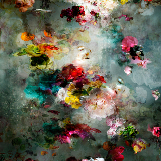
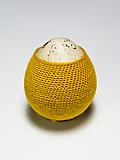

Isabelle Menin
Song For Dead Heroes #3
Digital C-print
3 sizes:
42.5 x 106.3 inches, edition of 3 + AP
31.5 x 78.7 inches, edition of 6 + AP
15.7 x 39.4 inches, edition of 6 + AP
2017
Petites Natures #23
Fine Art Print, 2015, 2 sizes:
Size A: 39.3" x 27.5", edition of 5 + AP
Size B: 19.7" x 15.4", edition of 10 + AP
Petites Natures #9
Karen Margolis
"Tathata"
watercolor, gouache, graphite, thread on Abaca
14" x 11"
"Scattered Reflections"
"Atomic Enso"
"Entantiomer"
14" x 21.5"
Esther Traugot
Patched egg (goose egg 2)
goose egg shell, dyed cotton thread, wood riser and shelf
6.5" x 6.5" x 3 5/8"
Patched egg (goose egg 1)
Home Again Caracol shells, dyed bamboo yarn, wood shelf 11" x 11" x 4 5/16" 2015
Life in a Bowl
Cherry pits, hand-dyed cotton thread, small glass bowl, wood shelf
2" x 3.5" x 3.5"
2013
Huddle (Detail) Found honey bees, dyed cotton thread, plexi base, glass dome
6.5" x 6.5" x 4.75"
Seed Dome (Pink Oak Acorn) Three acorns, dyed cotton thread, glass dome, plexi riser, wood shelf 6.5” x 6.5” x 5” H 2017
Huddle mini Found honey bees (25), dyed cotton thread, plexi base, glass dome 6.5” x 6.5" x 4.75" 2017
Susanna Bauer
Ascending
Magnolia leaves, cotton yarn
13.4 x 9inches
Thread
6.6 x 8.3 inches
Aligning (side view)
13.5 x 10.4 x 2.75 inches
2015 - 2016
Aligning
Inner Circle
14.1 x 10.1 inches
2015

